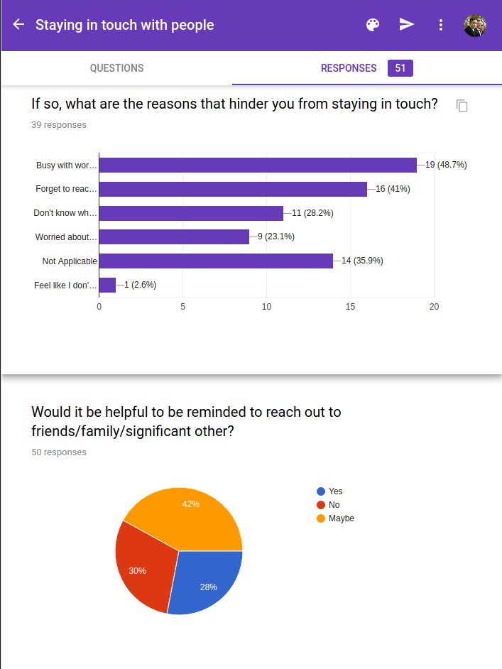

Social Interactions of the Future
Angelic Software is a small startup attempting to change the way people navigate social interaction.
My role as lead UX Designer was to design user flow and interactions within the application via production of wireframes and prototypes, as well as conducting research into the market receptivity of the product. I conducted 2 surveys and built prototypes on a weekly basis to be discussed and reviewed by the project lead and stakeholders.
This project started from the concept that we as people do not give as much time to the significant people in our lives as much as we should. Dead bedrooms arisen from having children or parents and grandparents forgotten as we move on in our adult lives seem to be commonplace stories in our modern world where technology affords us instant gratification and distraction. Our team wanted to address this by using technology to improve our relationships with the people in our lives.
To see if our theory that people have trouble maintaining relationships, we distributed a survey to friends, family, and Reddit. The results were conclusive: people have trouble staying in touch. Whether it be from being too busy, to merely not remembering to call, we have many reasons why we fail to inform the people we care about just how important they are to us.
With our mission goals defined, we needed to figure out what would be the quickest and simplist implimentation of what we were trying to acheive. Initial developer goals were crude, essentially building a conversational engine to generate nice things to say. The other designer and I felt that this would be received poorly by family and friends, on the grounds that people receive enough spam today, they don't need it from their loved ones.
We did issue another survey regarding the reception of such canned lines and people were not as offended by the thought as much as we initially predicted. I believe this to be a result of survey takers not having a clear example of what canned conversation looks like, but I conceded to the data and we decided to maintain some generational features.
For our MVP, we concluded that our MVP would consist of a relationship manager where the user can set interval reminders, take notes, and bookmark anniversaries and other special dates.
After discussing the potential of our product, we decided that one of our key features should be how we prioritize communications with people. For example, we wanted to be able to ensure that we never miss a birthday or anniversary, so events of that nature would be shuffled to the top, and then sorted by last message sent. Subsequent messages would be sorted only by last message sent, in reverse chronological order(most recent at the bottom).
All mockups were produced with Sketch and prototyped in both Invision and Adobe XD. This project is currently on hiatus.